총자산 5,000 USDT 이상 회원이 켜는 오토 모드의 상위 단계입니다. 아직 회원 앱에 게시하지 않은 검토용 자료입니다. 보시고 의견 주세요.
잔고는 서버가 그 회원 거래소에서 직접 읽어 판정합니다. 오렌지엑스·투빗 회원 모두 같은 기준입니다. 자격이 있어도 회원이 켜야 적용됩니다.
날씨는 비중을 줄이는 데만 씁니다. 배율을 올리는 데는 쓰지 않아서, 날씨 값이 잘못 와도 위험이 커지지 않습니다.
오토 모드 창의 '프로 모드 ›' 줄을 누르면 프로 모드 화면이 열립니다. 오토 모드가 도는 중에도 켜고 끌 수 있습니다.
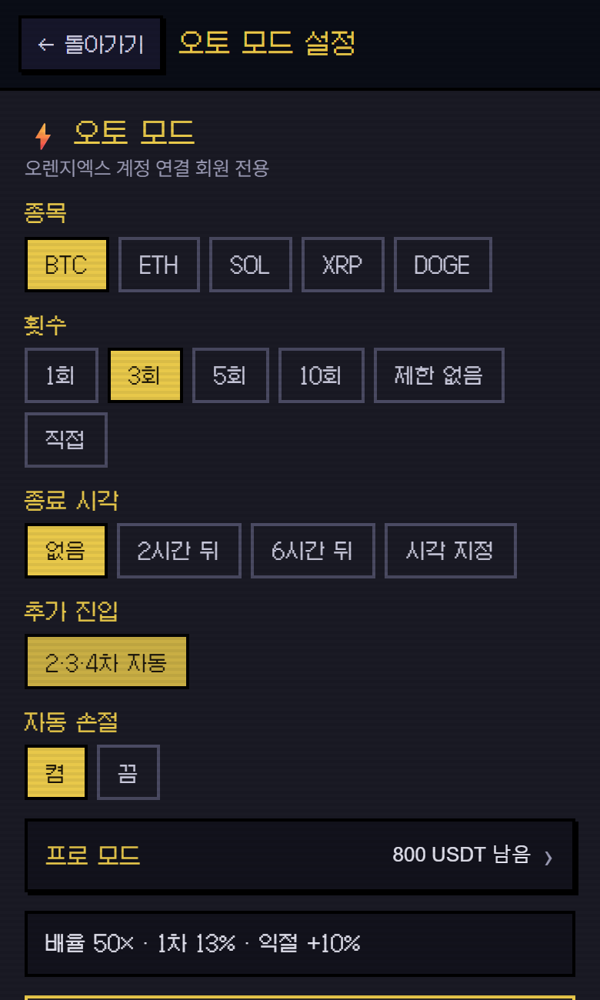
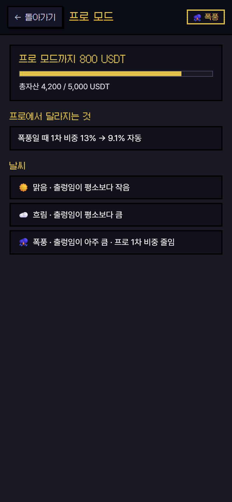
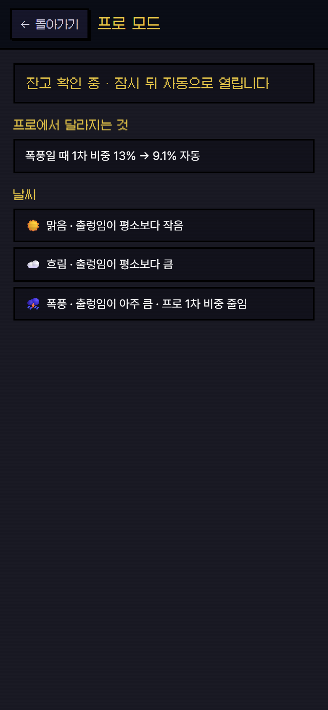
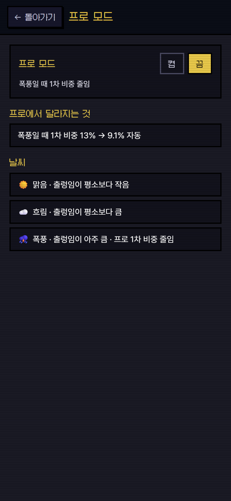
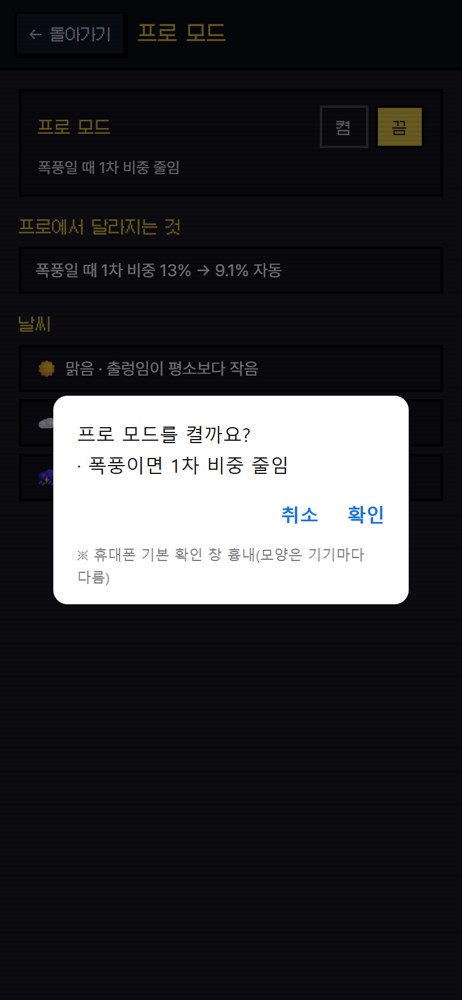
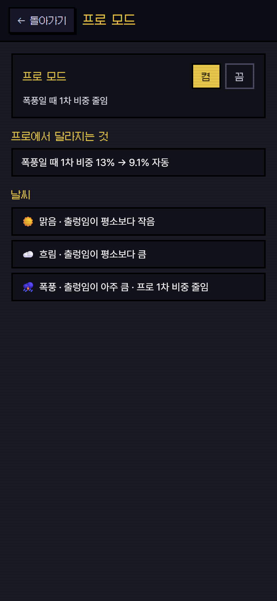
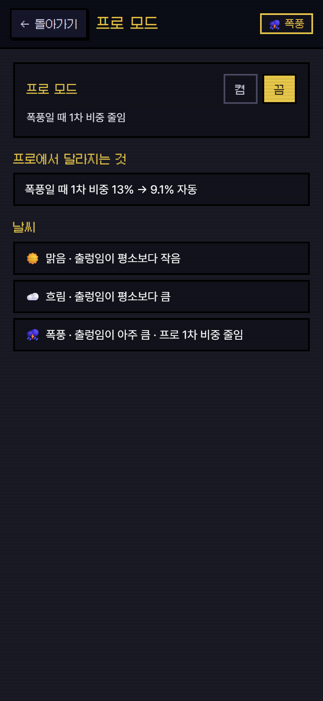
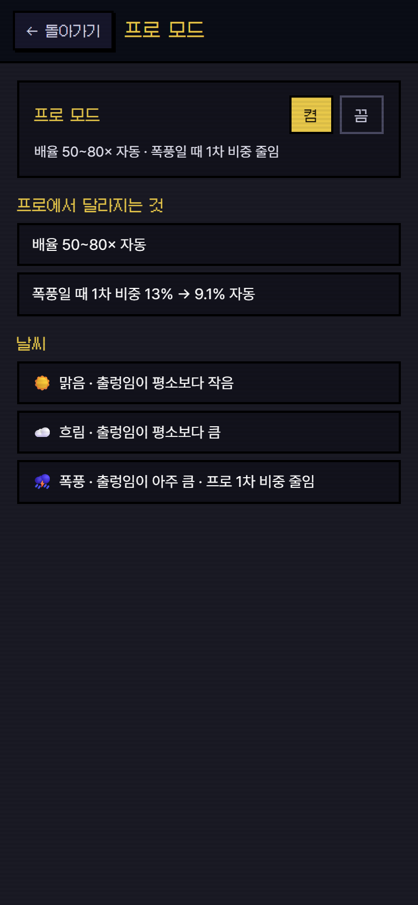
프로 모드를 켠 회원의 트레이딩 차트에 진입 계획이 거미줄처럼 그어집니다. 1차 점이 찍히고 선이 뻗어 나가고, 2차가 체결되면 그 줄이 굵어지며 3·4차 자리가 새 평단 기준으로 다시 그어집니다. 매매가 끝나면 걷힙니다. 손절가·청산가는 그리지 않습니다.
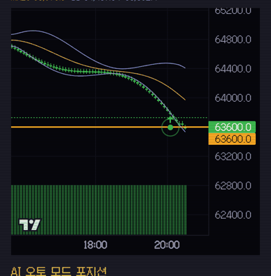
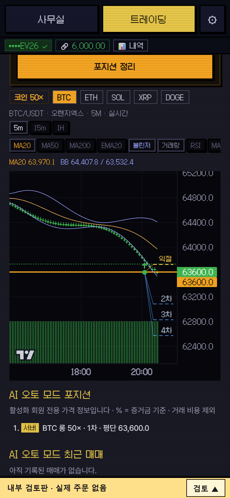
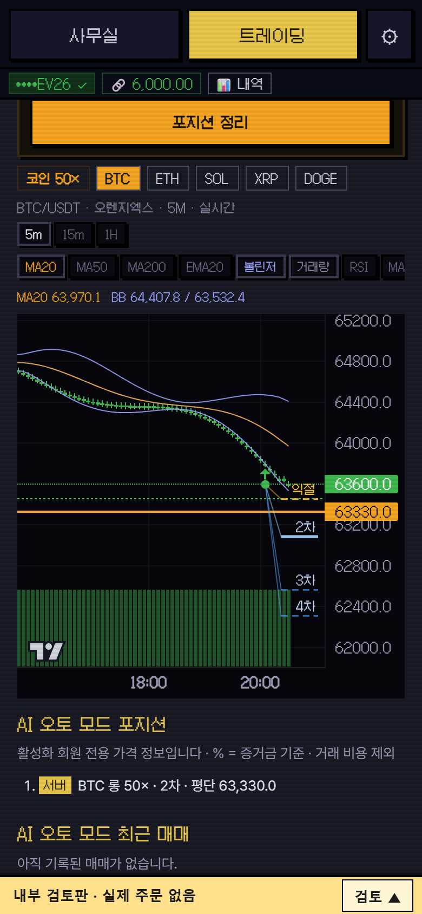
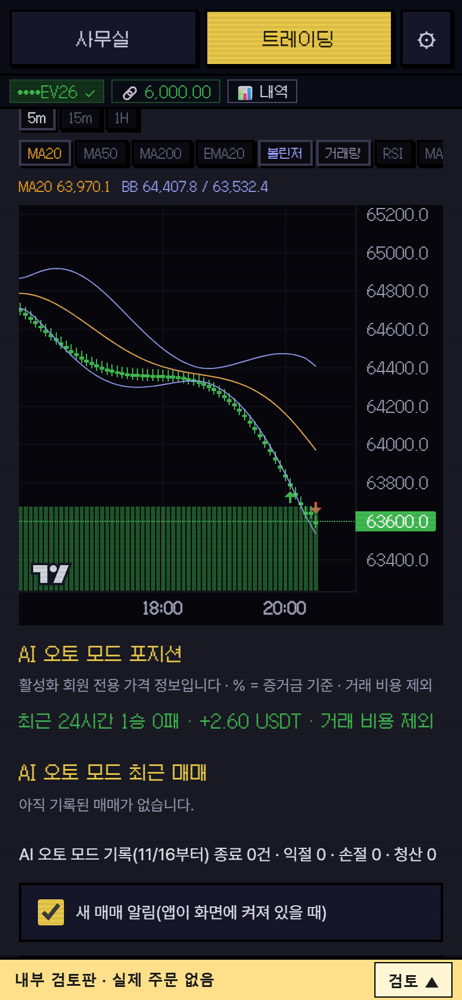
프로 화면 게이지 아래 '프로 모드란?'을 누르면 장면 다섯 개가 5초씩 지나갑니다. 건너뛰기·다시 보기·닫기가 있습니다.
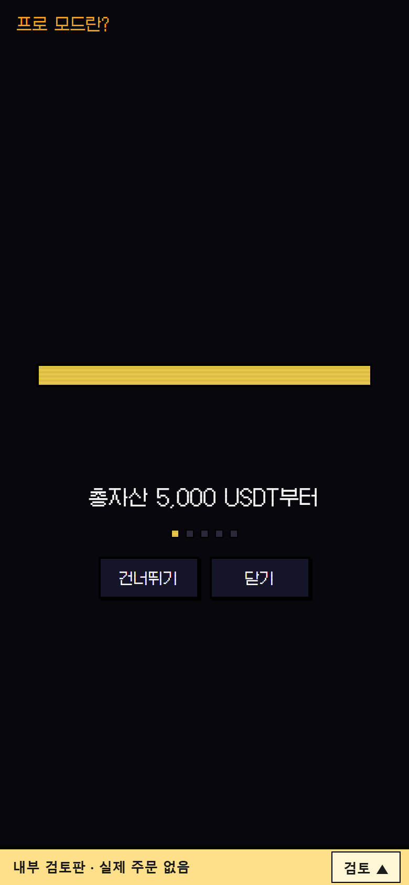
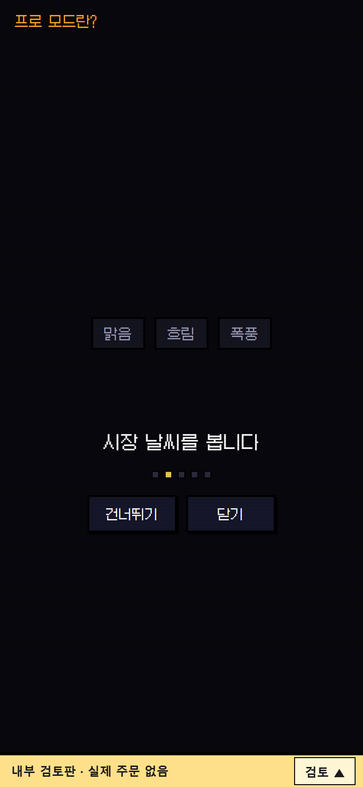
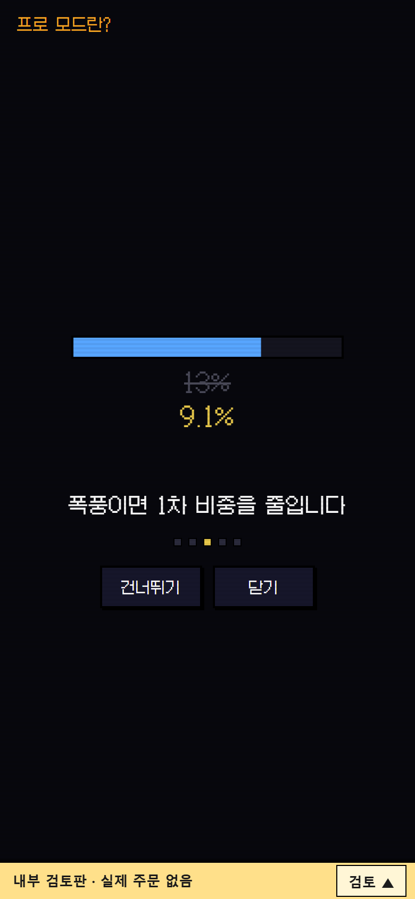
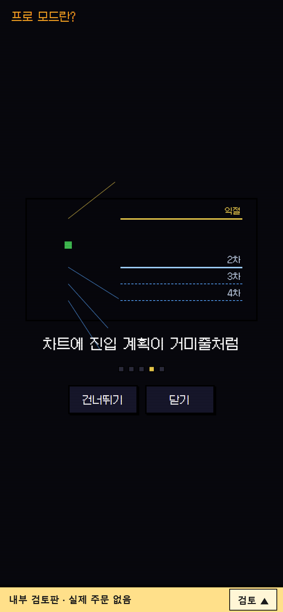
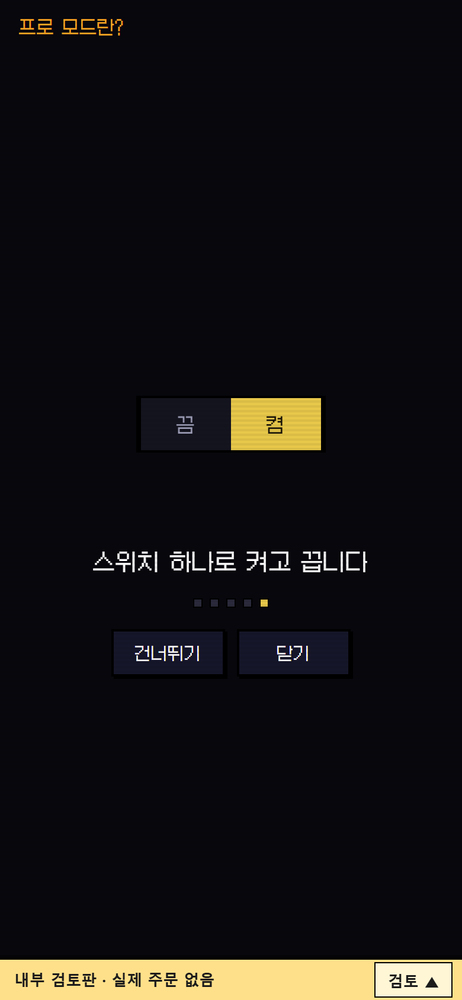
가격이 반대로 몇 % 움직이면 그 선에 닿는지. 배율이 높을수록 4차 강제 선과 추정 청산 사이가 좁아집니다. 이 표를 보고 의견 주세요.
| 배율 | 2차 진입 | 3차 진입 | 4차 진입 | 4차 강제 | 추정 청산 | 4차 뒤 손절 감시 |
|---|---|---|---|---|---|---|
| 50× | 0.500% | 0.800% | 1.200% | 1.600% | 1.620% | 1.296% |
| 60× | 0.397% | 0.635% | 0.953% | 1.237% | 1.287% | 1.029% |
| 70× | 0.324% | 0.518% | 0.777% | 1.006% | 1.049% | 0.839% |
| 80× | 0.269% | 0.430% | 0.644% | 0.832% | 0.870% | 0.696% |
각 차수 선은 그때의 평균 진입가 기준, 손절 감시는 4차까지 체결한 뒤의 평균가 기준입니다.
TEST-PREV26 입력 (또는 아래 '검토 ▲' 막대의 '① UID 활성화').검토판은 가짜 서버로만 돌아 실제 주문·회원·거래소와 연결되지 않습니다. 새로 고치면 처음부터 다시 해야 합니다.